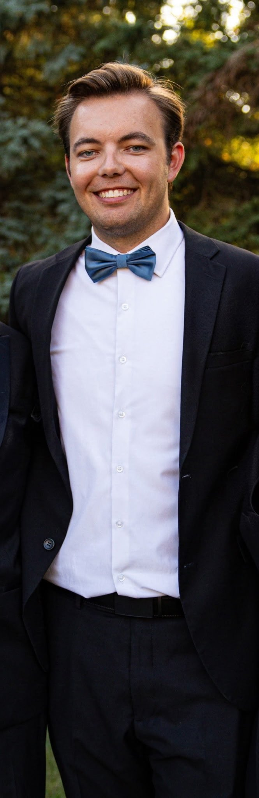
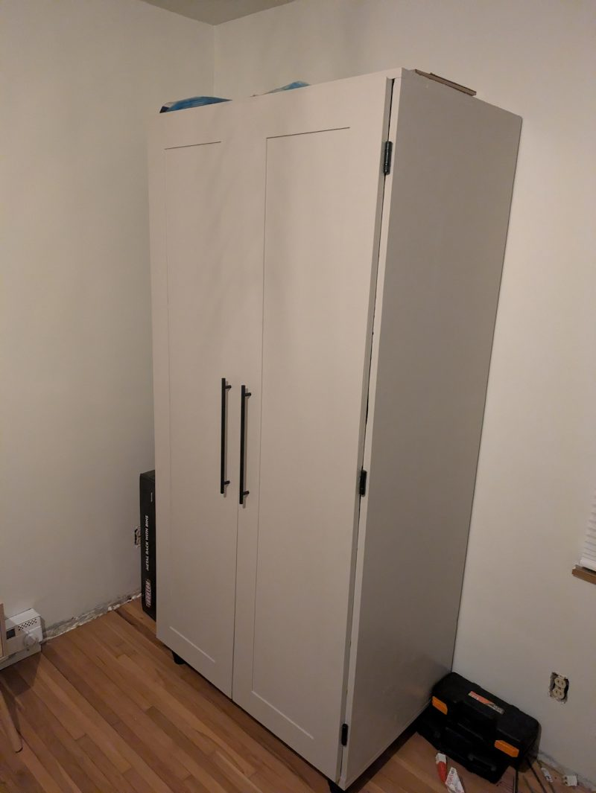
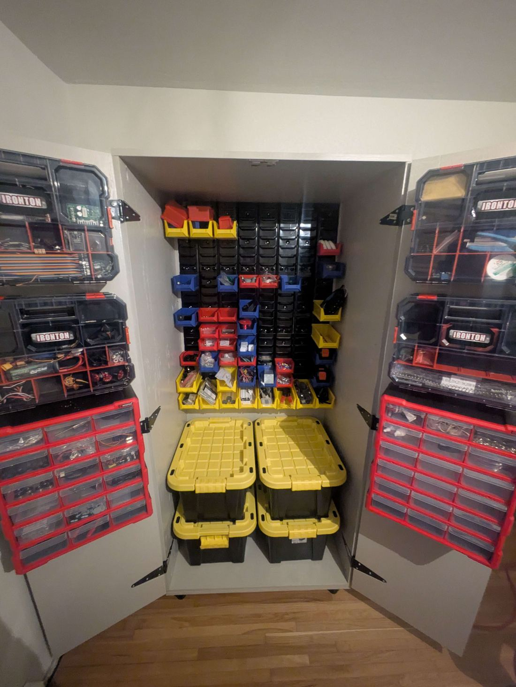
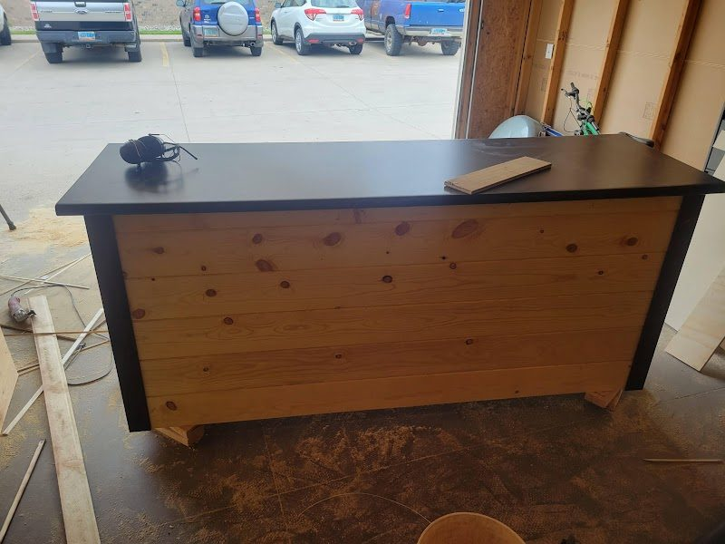
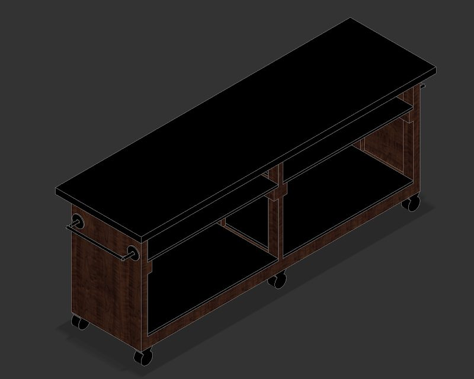
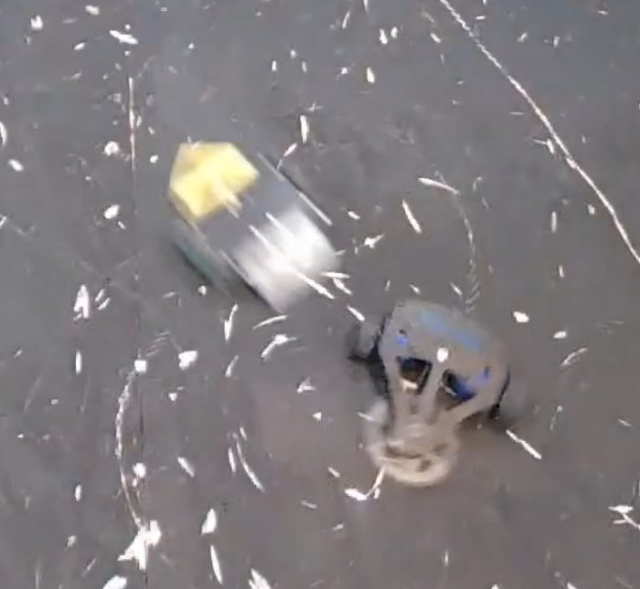
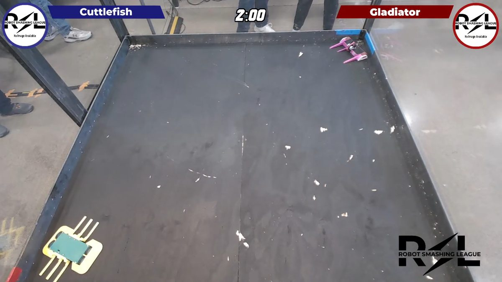

Mechanical engineer. Hands-on builder.
I design and prototype agricultural sensor hardware, build the test rigs that prove it works, and take it into production. At home, I build whatever the garage needs.

About
NDSU mechanical engineering, December 2024. I work in Research and Advanced Engineering at Precision Planting, taking products from concept through prototyping, testing, and production. I spend most of my time on the bench and in the field, running the tests that prove a design works and talking with the farmers and dealers who use it.
Outside of work I build things at home when the garage needs something. It's usually just an excuse to model it in CAD first.
Experience
R&D Engineer
- Developed three mechanical designs for an optical seed-flow sensor (injection molded, SLS printed for production, machined, and sheet cut), quoted them with multiple manufacturers, and chose the lowest-cost option with no loss in usability.
- Manage CAD, models, and drawings from prototype into production, with GD&T callouts and tolerance stack-up control. Tightening the design cut sensor-to-sensor variance about 3x.
- Built the test stands and analysis that prove a design meets spec, including a validation system for a ±2% requirement and fluid test rigs with VFDs, blowers, pumps, flow meters, and venturi product conveying.
- Design overmolded connectors and adapter harnesses, and work with suppliers and contract manufacturers on cost and end-of-line testing.
- Visit farms and dealers to understand the problem and gather feedback on what to keep and improve.
R&D Engineering Intern
- Rescued a sensor program at risk of cancellation. I took a mechanical design from non-functional to working, optimized it to hold accuracy across a harsh operating range, and built a heat map algorithm to finish the job.
- Owned lab and field testing, test stands, and data analysis for the project, at a full engineer's workload.
Foreman
- Ran a crew of up to eight on demolition, framing, and repair jobs, training and delegating. Most of what I know about managing people actually came from this job.
High school intern
- Production data analysis and manufacturing quality checks, running Cpk and Ppk against tolerance and standard deviation.
Co-founder, small business
- Building low-cost, easy-to-use technical solutions for farmers.
Selected work
Sensor mechanical design
Three full mechanical designs for an optical seed-flow sensor, made with injection molding, SLS printing for production, machining, and sheet cutting. I quoted each with multiple manufacturers and picked the lowest-cost option with no loss in ease of use. I own the CAD and drawings from prototype into production, using GD&T (flatness, surface finish, ordinate dimensioning) and tolerance stack-up analysis. Tightening the design cut sensor-to-sensor variance about 3x.
Sensor validation system
A test stand, control software, data recording, and analysis pipeline for the same sensor. It produced the statistical evidence for whether the design met its ±2% requirement, and extended its measurement range about 80%. I ran 50+ sensors on the bench and analyzed data from 250+ installed on farmer equipment over two seasons.
Heat map accuracy algorithm
A sensor that had a mechanical design but roughly ±60 to 80% accuracy. I reworked the mechanical solution to function across its harsh operating range, removed a calibration step that skewed the reference value, and built a heat map algorithm that brought accuracy to about ±5% in standard operating conditions.
Fluid and environmental test rigs
Test equipment built around VFDs, blowers, pumps, pressure sensors, flow meters, and venturi product conveying, plus thermal chamber testing, with DAQ and analysis tools I wrote in Python, Julia, and C# that the rest of the team adopted.
Overmolded connector assembly
Mechanical design of an overmolded connector assembly that houses a circuit board in the back of the housing, with a cable and second connector coming out. It moves into production this winter.
STEP assembly viewer
A Python app, packaged as a standalone executable, that splits a STEP assembly into parts and renders views from the company model library. Product support makes their own images instead of asking engineering for screenshots, saving an estimated 4+ engineering hours per product.
Built at home


Shop storage cabinet
A 2×3×6 ft cabinet planned in CAD to fit filament, motors, boards, and CNC bits into off-the-shelf organizers with no wasted space.


Coffee cart
A beverage cart for church use, sized to a tight footprint and modeled first so the dimensions were signed off before any wood was cut.


Gladiator combat robot
A wedge-style combat robot built for Robot Smashing League, designed to get under opponents and flip them.
More of my CAD and code is on GitHub.
Skills
Design and CAD: Creo, Fusion 360, DFM, GD&T drawings, tolerance stack-up, drawing and model revision control.
Manufacturing: Injection molding, SLS, machining, sheet cutting, overmolding, supplier quoting, end-of-line testing.
Prototyping: FDM and SLS 3D printing, rapid prototyping, custom lab and field fixtures.
Test and analysis: Test stand design, fluid and pneumatic rigs, thermal chamber testing, DAQ, CPK and PPK, Python, Julia, C#, introductory CFD.
Contact
I am also looking for mechanical, product, or R&D engineering work in the Fargo area or remote. Email is the fastest way to reach me.